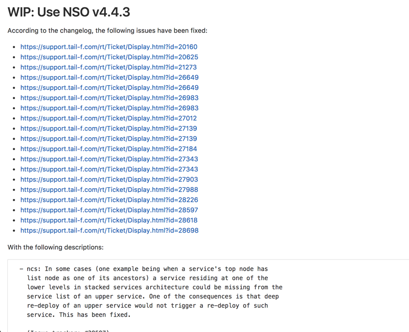

Writing a Python background worker for Cisco NSO
1 Writing a Python background worker for Cisco NSO
The create() callback is the primary means of which we get things done in Cisco NSO. NSO is most often used for configuration provisioning and so the create() callback, which reacts to changes on a YANG configuration subtree is the perfect tool; new configuration input leads to running of our create() code which renders new configuration output that we can push to devices or other services. In the YANG model we use a servicepoints for attaching a create() callback to a particular subtree in the YANG model. In addition to create() servicepoint we also have actionpoints which allow us to attach our code to YANG actions. Both servicepoint and actionpoint both attach to the YANG model and lets code be executed upon external stimuli, either the request to run an action or the change of configuration. What if you want to decide yourself when something should happen or perhaps execute things at a certain periodicity? That's a job for a background worker which is running continuously. With such a background worker, it would be entirely up to you to shape and form the code of the worker to do whatever you need to accomplish. This post is about implementing such a background worker.
It should be noted that there is functionality in NSO to schedule periodic activities in a cron job style but I find it somewhat lacking, not that it's worse than cron but cron just isn't the right tool for everything. You would probably do well in understanding it before deciding on how to solve your specific challenge. Either way, as is common with us technical people the question of why or why not is not the focus of this post. Rather, we want to focus on the how. If you feel the need for a background worker in NSO, how do you actually go about implementing one?
I'll assume you have some experience with Cisco NSO and that you know how to implement basic services, actions etc. Since I have a strong preference of Python over Java, this will focus on how to do this using the Python support in NSO. Let's go on a journey of implementing a Python background worker for Cisco NSO!
1.1 TL;DR;
If you just want to skip to the result, check out bgworker on github.
1.2 Anatomy of the Python VM
The NSO core is written in Erlang and so to run user code written in Python it runs a separate Python VM process that communicates with the NSO core over a number of APIs. It will spawn one Python VM process for each NSO package that wants to run Python code. Thus there is some separation between different packages and given the GIL (Giant Interpreter Lock) in the standard Python interpreter it also allows for a natural way to get past the parallel execution problem, at least to a certain extent, as different NSO packages will run in their own python process.
Within each Python VM there will be a main thread and then multiple other threads for the various components that are specified by the package-meta-data.xml file.
1.3 A naive approach
Okay, so let's get started. Let's try writing a background worker. We'll start by making a new package and we'll start off from the python service skeleton.
ncs-make-package --service-skeleton python
The purpose of our background worker, as an example, will be to increment a counter at a periodic interval. It's stupid simple and not useful on its own but as we will see, our focus won't be on the work carried out but primarily on the things around setting up a worker and so this will serve as a simple example. I'm sure you'll be able to adapt it to your task.
Edit or replace the YANG model to the following. We just want a simple leaf called counter, that is config false (i.e. operational state data). To avoid total chaos we put it under a bgworker container.
module bgworker { namespace "http://example.com/bgworker"; prefix bgworker; container bgworker { leaf counter { config false; type uint32; default 0; } } }
There are some other things, like revision and description of the module that you should add in but I'm trying to keep it to an absolute bare minimum in order to focus on what is relevant for our scenario.
We set the default value to 0 which means the counter will be 0 each time NCS starts up. Unlike configuration data, state data in NCS is not persisted per default which is why our leaf will go back to a value of 0 each time NCS starts. We could add tailf:persistent "true" to the leaf to make it persisted in CDB.
With a YANG model in place, how do we actually go about implementing the worker itself? The ncs.application.Application class offered by the NSO Python libraries allows us to define an "Application" which is our entry point and way of hooking into NSO. The normal example skeleton code produced by ncs-make-package shows us the use of the setup() and teardown() methods to hook into the start and stop of our Application.
# -*- mode: python; python-indent: 4 -*- import ncs from ncs.application import Service # ------------------------ # SERVICE CALLBACK EXAMPLE # ------------------------ class ServiceCallbacks(Service): # The create() callback is invoked inside NCS FASTMAP and # must always exist. @Service.create def cb_create(self, tctx, root, service, proplist): self.log.info('Service create(service=', service._path, ')') # The pre_modification() and post_modification() callbacks are optional, # and are invoked outside FASTMAP. pre_modification() is invoked before # create, update, or delete of the service, as indicated by the enum # ncs_service_operation op parameter. Conversely # post_modification() is invoked after create, update, or delete # of the service. These functions can be useful e.g. for # allocations that should be stored and existing also when the # service instance is removed. # @Service.pre_lock_create # def cb_pre_lock_create(self, tctx, root, service, proplist): # self.log.info('Service plcreate(service=', service._path, ')') # @Service.pre_modification # def cb_pre_modification(self, tctx, op, kp, root, proplist): # self.log.info('Service premod(service=', kp, ')') # @Service.post_modification # def cb_post_modification(self, tctx, op, kp, root, proplist): # self.log.info('Service premod(service=', kp, ')') # --------------------------------------------- # COMPONENT THREAD THAT WILL BE STARTED BY NCS. # --------------------------------------------- class Main(ncs.application.Application): def setup(self): # The application class sets up logging for us. It is accessible # through 'self.log' and is a ncs.log.Log instance. self.log.info('Main RUNNING') # Service callbacks require a registration for a 'service point', # as specified in the corresponding data model. # self.register_service('bgworker-servicepoint', ServiceCallbacks) # If we registered any callback(s) above, the Application class # took care of creating a daemon (related to the service/action point). # When this setup method is finished, all registrations are # considered done and the application is 'started'. def teardown(self): # When the application is finished (which would happen if NCS went # down, packages were reloaded or some error occurred) this teardown # method will be called. self.log.info('Main FINISHED')
As can be seen by this comment, this is a component thread and runs as a thread in the Python VM.
# --------------------------------------------- # COMPONENT THREAD THAT WILL BE STARTED BY NCS. # --------------------------------------------- class Main(ncs.application.Application): def setup(self): ...
We want a background worker, so all we have to do is start another thread from this setup() method, right?
Here's the modified Python code:
# -*- mode: python; python-indent: 4 -*- import threading import time import ncs from ncs.application import Service class BgWorker(threading.Thread): def run(self): while True: print("Hello from background worker") time.sleep(1) class Main(ncs.application.Application): def setup(self): self.log.info('Main RUNNING') self.bgw = BgWorker() self.bgw.start() def teardown(self): self.log.info('Main FINISHED') self.bgw.stop()
I ripped out the ServiceCallbacks class with its cb_create() since we don't need that here and instead created a new thread definition called BgWorker which is instantiated and started from the setup() method of our Application. Let's try loading the package by running request packages reload on our NCS instance (I'm presuming you know how to start up NCS, put the package in the right place etc).
admin@ncs> request packages reload force
>>> System upgrade is starting.
>>> Sessions in configure mode must exit to operational mode.
>>> No configuration changes can be performed until upgrade has completed.
>>> System upgrade has completed successfully.
reload-result {
package bgworker
result true
}
[ok][2019-07-01 13:43:04]
admin@ncs>
The only thing our background worker does at this point is print a message once a second. Since they are printed and not logged, they will show up in the main python log of NCS ncs-python-vm.log.
kll@nuc:~/ncs-4.7.4.2/ncs-run/logs$ tail -f ncs-python-vm.log <INFO> 1-Jul-2019::13:43:04.534 nuc ncs[11832]: Started PyVM: <<"bgworker">> , Port=#Port<0.26560> , OSpid="26111" <INFO> 1-Jul-2019::13:43:04.535 nuc ncs[11832]: bgworker :: Starting /home/kll/ncs-4.7.4.2/src/ncs/pyapi/ncs_pyvm/startup.py -l info -f ./logs/ncs-python-vm -i bgworker <INFO> 1-Jul-2019::13:43:04.595 nuc ncs[11832]: bgworker :: Hello from background worker <INFO> 1-Jul-2019::13:43:05.597 nuc ncs[11832]: bgworker :: Hello from background worker <INFO> 1-Jul-2019::13:43:06.598 nuc ncs[11832]: bgworker :: Hello from background worker <INFO> 1-Jul-2019::13:43:07.599 nuc ncs[11832]: bgworker :: Hello from background worker <INFO> 1-Jul-2019::13:43:08.599 nuc ncs[11832]: bgworker :: Hello from background worker
Et voilà! It's working.
1.4 Reacting to NCS package events like reload and redeploy
request packages reload is the "standard" way of loading in new packages, including loading new packages, loading a newer version of an existing already loaded package as well as unloading package (in which case you have to also provide the force as NCS will complain over the removal of a namespace, which it thinks is a mistake). It covers all changes like config template changes, YANG model changes and code changes. It is however quite slow and if you have a lot of packages you will soon be rather annoyed over the time it takes (around 2 minutes with the packages we usually have loaded in my work environment). Code changes are perhaps the most common changes during development as you are changing lines, wanting to get them loaded immediately and then run your code again. There is a redeploy command for exactly this purpose which can redeploy the code for a single package. In our case, the package is called bgworker and so we can redeploy the code by running request packages package bgworker redeploy. It normally runs in a second or so.
Let's try:
admin@ncs> request packages package bgworker redeploy result false [ok][2019-07-01 13:48:49] admin@ncs>
uh oh. result false, why?
Well, our thread runs a while True loop and so it simply doesn't have a way of exiting. Unlike UNIX processes, there is no way to kill a thread. They can't be interrupted through signals or similar. If you want to stop a thread, the thread itself has to cooperate, so in effect what you are doing is to ask the thread to shut down. We can still forcibly stop our thread by stopping the entire Python VM for our NCS package, since it is running as a UNIX process and can thus be terminated, which will naturally bring down the thread as well. There is a request python-vm stop command in NCS or we can just run request packages reload which also involves restarting the Python VM (restart being a stop of the old version and a start of the new version).
We want to be able to run redeploy though, so how do we get our background worker to play nice? The requirement is that the work has to stop within 3 seconds or NCS thinks it's a failure.
Using a Python events might be the most natural way:
# -*- mode: python; python-indent: 4 -*- import threading import time import ncs from ncs.application import Service class BgWorker(threading.Thread): def __init__(self): threading.Thread.__init__(self) self._exit_flag = threading.Event() def run(self): while not self._exit_flag.wait(timeout=1): print("Hello from background worker") def stop(self): self._exit_flag.set() self.join() class Main(ncs.application.Application): def setup(self): self.log.info('Main RUNNING') self.bgw = BgWorker() self.bgw.start() def teardown(self): self.log.info('Main FINISHED') self.bgw.stop()
We modify our code a bit, inserting a check on a threading.Event in the main loop and then set the Event externally in the thread stop() method. Since we can run wait() on the Event with a timeout of 1 second we no longer need the separate time.sleep(1) call.
We override __init__() but since we have to call the overwritten __init__ we do that by calling threading.Thread.__init__(self).
Now running redeploy works just fine:
admin@ncs> request packages package bgworker redeploy result true [ok][2019-07-01 15:02:09] admin@ncs>
Maybe we should implement the main functionality of our program, to increment the counter, instead of just printing a message. Let's rewrite the run method. I've included the full module here but the changes are only in the run method.
# -*- mode: python; python-indent: 4 -*- import threading import time import ncs from ncs.application import Service class BgWorker(threading.Thread): def __init__(self): threading.Thread.__init__(self) self._exit_flag = threading.Event() def run(self): while not self._exit_flag.wait(timeout=1): with ncs.maapi.single_write_trans('bgworker', 'system', db=ncs.OPERATIONAL) as oper_trans_write: root = ncs.maagic.get_root(oper_trans_write) cur_val = root.bgworker.counter root.bgworker.counter += 1 oper_trans_write.apply() print("Hello from background worker, increment counter from {} to {}".format(cur_val, cur_val+1)) def stop(self): self._exit_flag.set() self.join() class Main(ncs.application.Application): def setup(self): self.log.info('Main RUNNING') self.bgw = BgWorker() self.bgw.start() def teardown(self): self.log.info('Main FINISHED') self.bgw.stop()
with ncs.maapi.single_write_trans('bgworker', 'system', db=ncs.OPERATIONAL) as oper_trans_write:
We've added some code where we open a single MAAPI write transaction using single_write_trans() which allows us to open both a maapi context, session and transaction all in one call. We use it as a context manager to ensure we close all those resources in case of errors or normal exit. There are three parameters to this call. The first and second are the "authentication" information to the system. All of this is running over a trusted MAAPI session but we can tell it what user we are then running our session as. The system user is special and has access to pretty much everything. It doesn't rely on the AAA system and so it is a good candidate for writing these kinds of background workers - if someone messes up the AAA configuration you still don't risk your background workers stopping. The first parameter is a context name. I've found that it's very useful to use a good name (you can use an empty string) since it makes troubleshooting so much easier - this context name shows up in ncs --status and other places - if you want to be able to know who is holding a lock, you want to put something useful here. The third parameter is where we say we are only interested in the operational datastore, whereas if we wanted to change any configuration this would have to be running, which also is the default so we could just leave out the argument completely.
Once we have a transaction to the operational database we want to find our node, read out its value, add 1 and write it back which is what the following three lines accomplishes:
root = ncs.maagic.get_root(oper_trans_write) cur_val = root.bgworker.counter root.bgworker.counter += 1 oper_trans_write.apply()
finally we apply() the transaction.
In the logs we can now see our log message reflecting what it is doing:
<INFO> 1-Jul-2019::15:11:54.906 nuc ncs[11832]: Started PyVM: <<"bgworker">> , Port=#Port<0.34116> , OSpid="32328" <INFO> 1-Jul-2019::15:11:54.906 nuc ncs[11832]: bgworker :: Starting /home/kll/ncs-4.7.4.2/src/ncs/pyapi/ncs_pyvm/startup.py -l info -f ./logs/ncs-python-vm -i bgworker <INFO> 1-Jul-2019::15:11:55.956 nuc ncs[11832]: bgworker :: Hello from background worker, increment counter from 0 to 1 <INFO> 1-Jul-2019::15:11:56.964 nuc ncs[11832]: bgworker :: Hello from background worker, increment counter from 1 to 2 <INFO> 1-Jul-2019::15:11:57.977 nuc ncs[11832]: bgworker :: Hello from background worker, increment counter from 2 to 3 <INFO> 1-Jul-2019::15:11:58.982 nuc ncs[11832]: bgworker :: Hello from background worker, increment counter from 3 to 4 <INFO> 1-Jul-2019::15:11:59.997 nuc ncs[11832]: bgworker :: Hello from background worker, increment counter from 4 to 5 <INFO> 1-Jul-2019::15:12:01.007 nuc ncs[11832]: bgworker :: Hello from background worker, increment counter from 5 to 6
And if we go look at the value through the CLI we can see how it is being incremented:
admin@ncs> show bgworker counter bgworker counter 845 [ok][2019-07-01 15:26:08] admin@ncs>
Success!
If we redeploy the bgworker package or reload all packages, the worker would continue incrementing the counter from where it left off. This is because we only restart the Python VM while NCS is still running and since the value is stored in CDB, which is part of NCS, it will not go back to the default value of 0 unless we restart NCS.
Let's clean up our code a bit. Instead of printing these messages to stdout we want to use standard Python logging (well, it's actually overridden by an NCS logging module but it acts the same, just allowing reconfiguration from within NCS itself). We want to hide this background thread and just make it look like our application is printing the messages and so we pass the log object down (you can do it in other ways if you want to):
# -*- mode: python; python-indent: 4 -*- import threading import time import ncs from ncs.application import Service class BgWorker(threading.Thread): def __init__(self, log): threading.Thread.__init__(self) self.log = log self._exit_flag = threading.Event() def run(self): while not self._exit_flag.wait(timeout=1): with ncs.maapi.single_write_trans('bgworker', 'system', db=ncs.OPERATIONAL) as oper_trans_write: root = ncs.maagic.get_root(oper_trans_write) cur_val = root.bgworker.counter root.bgworker.counter += 1 oper_trans_write.apply() self.log.info("Hello from background worker, increment counter from {} to {}".format(cur_val, cur_val+1)) def stop(self): self._exit_flag.set() self.join() class Main(ncs.application.Application): def setup(self): self.log.info('Main RUNNING') self.bgw = BgWorker(log=self.log) self.bgw.start() def teardown(self): self.log.info('Main FINISHED') self.bgw.stop()
And looking in the log ncs-python-vm-bgworker-log (notice the package name bgworker in the file name) we see how it is now logging there as expected:
<INFO> 01-Jul-2019::15:30:06.582 bgworker MainThread: - Python 2.7.16 (default, Apr 6 2019, 01:42:57) [GCC 8.3.0] <INFO> 01-Jul-2019::15:30:06.582 bgworker MainThread: - Starting... <INFO> 01-Jul-2019::15:30:06.583 bgworker MainThread: - Started <INFO> 01-Jul-2019::15:30:06.602 bgworker ComponentThread:main: - Main RUNNING <INFO> 01-Jul-2019::15:30:07.607 bgworker Thread-5: - Hello from background worker, increment counter from 1061 to 1062 <INFO> 01-Jul-2019::15:30:08.620 bgworker Thread-5: - Hello from background worker, increment counter from 1062 to 1063 <INFO> 01-Jul-2019::15:30:09.624 bgworker Thread-5: - Hello from background worker, increment counter from 1063 to 1064 <INFO> 01-Jul-2019::15:30:10.628 bgworker Thread-5: - Hello from background worker, increment counter from 1064 to 1065
(you can also sort of figure out how long I am taking to write the various sections of this post based on the counter).
1.5 Back to killable threads
Now that we've opened a transaction towards CDB there is one issue we will inevitable face. The running datastore has a global lock and while there are no locks on the operational datastore, applying a transaction can still take some time. For example, in a HA cluster the operational data is synchronously replicated and if other nodes are busy or there are other things ahead of us queued up, it can take some time to apply a transaction. Remember that we have to exit in three seconds. The way we structured our code, we read the self._exit_flag waiting for up to a second for any values to happen, then we open the transaction and write some data and then we come back to looking at our exit flag again. If we spend more than three seconds in the transaction part of the code we won't observe the exit flag and we will fail to exit in three seconds.
How do we avoid this? How can we leave a guarantee on being able to exit in three seconds?
One solution is to avoid threads altogether and instead use separate processes and this is the route which we will go down. A process can be interrupted by signals like TERM or KILL, which is the functionality we are after here.
Also, David Beazley did an interesting talk on killable threads https://www.youtube.com/watch?v=U66KuyD3T0M which you're encouraged to check out. It's rather interesting… but back to our background worker process!
1.6 multiprocessing
Python has a very convenient library called multiprocessing which is close to a drop in replacement for the threading library but as we'll see, we can simplify the code quite a bit since we no longer have to do cooperative shutdown - we can just terminate the background worker process when we want to stop it.
# -*- mode: python; python-indent: 4 -*- import multiprocessing import time import ncs from ncs.application import Service def bg_worker(log): while True: with ncs.maapi.single_write_trans('bgworker', 'system', db=ncs.OPERATIONAL) as oper_trans_write: root = ncs.maagic.get_root(oper_trans_write) cur_val = root.bgworker.counter root.bgworker.counter += 1 oper_trans_write.apply() log.info("Hello from background worker process, increment counter from {} to {}".format(cur_val, cur_val+1)) time.sleep(1) class Main(ncs.application.Application): def setup(self): self.log.info('Main RUNNING') self.bgw = multiprocessing.Process(target=bg_worker, args=[self.log]) self.bgw.start() def teardown(self): self.log.info('Main FINISHED') self.bgw.terminate()
Much simpler, no? And the result is the same, in fact, since we are passing in the logging object, it is inseparable from the threading solution in the log:
<INFO> 01-Jul-2019::21:12:42.897 bgworker ComponentThread:main: - Main RUNNING <INFO> 01-Jul-2019::21:12:42.905 bgworker ComponentThread:main: - Hello from background worker process, increment counter from 21271 to 21272 <INFO> 01-Jul-2019::21:12:43.911 bgworker ComponentThread:main: - Hello from background worker process, increment counter from 21272 to 21273
well, I changed the log message slightly so I'd actually see it was from the background worker process.
1.7 Reacting to worker process events
What happens if something goes wrong with our worker process? Let's try.
def bg_worker(log): while True: with ncs.maapi.single_write_trans('bgworker', 'system', db=ncs.OPERATIONAL) as oper_trans_write: root = ncs.maagic.get_root(oper_trans_write) cur_val = root.bgworker.counter root.bgworker.counter += 1 oper_trans_write.apply() log.info("Hello from background worker process, increment counter from {} to {}".format(cur_val, cur_val+1)) if random.randint(0, 9) == 9: raise ValueError("bad dice value") time.sleep(1)
so we'll throw our ten sided dice and if we hit 9 we'll throw an error which should lead to termination of the python vm in the background process.
kll@nuc:~/ncs-4.7.4.2/ncs-run/logs$ tail -f ncs-python-vm-bgworker.log ncs-python-vm.log
...
==> ncs-python-vm-bgworker.log <==
<INFO> 01-Jul-2019::21:21:56.770 bgworker ComponentThread:main: - Hello from background worker process, increment counter from 21804 to 21805
<INFO> 01-Jul-2019::21:21:57.783 bgworker ComponentThread:main: - Hello from background worker process, increment counter from 21805 to 21806
<INFO> 01-Jul-2019::21:21:58.788 bgworker ComponentThread:main: - Hello from background worker process, increment counter from 21806 to 21807
<INFO> 01-Jul-2019::21:21:59.798 bgworker ComponentThread:main: - Hello from background worker process, increment counter from 21807 to 21808
<INFO> 01-Jul-2019::21:22:00.807 bgworker ComponentThread:main: - Hello from background worker process, increment counter from 21808 to 21809
<INFO> 01-Jul-2019::21:22:01.824 bgworker ComponentThread:main: - Hello from background worker process, increment counter from 21809 to 21810
<INFO> 01-Jul-2019::21:22:02.841 bgworker ComponentThread:main: - Hello from background worker process, increment counter from 21810 to 21811
<INFO> 01-Jul-2019::21:22:03.859 bgworker ComponentThread:main: - Hello from background worker process, increment counter from 21811 to 21812
<INFO> 01-Jul-2019::21:22:04.873 bgworker ComponentThread:main: - Hello from background worker process, increment counter from 21812 to 21813
<INFO> 01-Jul-2019::21:22:05.880 bgworker ComponentThread:main: - Hello from background worker process, increment counter from 21813 to 21814
<INFO> 01-Jul-2019::21:22:06.898 bgworker ComponentThread:main: - Hello from background worker process, increment counter from 21814 to 21815
==> ncs-python-vm.log <==
<INFO> 1-Jul-2019::21:22:06.899 nuc ncs[11832]: bgworker :: Process Process-1:
Traceback (most recent call last):
File "/usr/lib/python2.7/multiprocessing/process.py", line 267, in _bootstrap
<INFO> 1-Jul-2019::21:22:06.899 nuc ncs[11832]: bgworker :: self.run()
File "/usr/lib/python2.7/multiprocessing/process.py", line 114, in run
self._target(*self._args, **self._kwargs)
File "/home/kll/ncs-4.7.4.2/ncs-run/state/packages-in-use/1/bgworker/python/bgworker/main.py", line 19, in bg_worker
raise ValueError("bad dice value")
ValueError: bad dice value
^C
Lo and behold, it did. After this, nothing more happens as our process is dead. If we want the process restarted, we are going to have to do it ourselves. First, we need to monitor for liveness of the process and take action based on that… but before we do that, let's think through some other things that might happen and which we should react to.
1.8 Reacting to configuration events
Since you are reading this you probably haven't implemented a background worker yet so let me share some advice - add an off button. When you are troubleshooting your system it can be rather difficult with lots of things going on, triggered by these background workers. Having multiple background workers both of different type and multiple instances of the same type exacerbate the issue. With an off button we can easily turn them off and troubleshoot the interesting parts. It might seem crude, and I think it is, but in lack of better instrumentation in NCS, it is the best we have.
The most intuitive way of doing this, and the way I've done it so far, is to simply add some configuration that controls whether the background worker is enabled or not. Going back to our YANG model, we add an enabled leaf to control if the worker is enabled or not.
module bgworker { namespace "http://example.com/bgworker"; prefix bgworker; container bgworker { leaf enabled { type boolean; default true; } leaf counter { config false; type uint32; default 0; } } }
1.9 Reacting to HA events
Finally, we have to react to High Availability (HA) events. Depending on which type of worker we are implementing we might want different behaviour. I've so far only had to deal with background workers that write configuration and since that can only be done on the master of a HA system, our background worker should only run on the master node. If you on the other hand are operating on some other data or perhaps not writing anything to CDB, it is possible to still run the worker on all nodes.
Assuming you only want to run on the HA master we have to determine;
- if HA is enabled
- what the HA mode is
Getting HA mode is quite simple, it's available from /ncs:ncs-state/ha/mode.
I wrote this simple decision algorithm for the behaviour we are looking for:
| HA enabled | mode | run worker? |
|---|---|---|
| enabled | master | true |
| enabled | slave | false |
| enabled | none | false |
| disabled | none | true |
The sort of tricky thing is that when we are in mode none we should either run or not depending on if the whole HA functionality is enabled or not, which means we need to look at both. /ncs:ncs-state/ha is a presence container and is only present when HA is enabled, thus allowing us to determine if HA is enabled or not.
Another problem around HA event monitoring is that the /ncs:ncs-state/ha path isn't in CDB oper as one might have thought, it is actually data provider (DP) backed meaning that we can't use the CDB subscriber design pattern to listen to events. Instead there is a new API that was introduced with NCS 4.7.3 that allows us to subscribe to various events. I'm not sure how I feel about this because one of the strengths of NCS was the YANG modeled nature of everything and that's been effectively abandoned here in benefit of some other interfaces. I've written code that repetitively reads from the /ncs:ncs-state/ha path but as it turns out, it's not very fast, probably due to the DP simply not being very fast. We should avoid hammering this path with reads and instead try to subscribe to changes.
1.10 Rube Goldberg
Okay, so we've gathered all our requirements and are ready to write, as we will see, the Rube Goldberg of NSO background worker process frameworks!
To sum up, we want:
- react to NCS package events (redeploy primarily)
- react to the background worker dying (supervisor style)
- react to changes of the configuration for our background worker (enabled or not)
- react to HA events
The basic challenge is that we have multiple different data sources we want to read and monitor but they come in different shape and form. For example, we can write some code that listens for HA events:
mask = events.NOTIF_HA_INFO event_socket = socket.socket() events.notifications_connect(event_socket, mask, ip='127.0.0.1', port=ncs.NCS_PORT) while not self._exit_flag.wait(timeout=1): notification = events.read_notification(event_socket)
The standard way of monitoring say multiple sockets would be by using a select loop, but we can't do that here since events.read_notification() isn't selectable nor does a standard CDB subscriber expose a selectable interface. Instead we end up in some form of loop where we need to run various read or wait calls on the things we want to monitor. If we do that using non-blocking calls on all the things it means we will busy loop, which is bad due to CPU usage. If we do blocking calls with a timeout on at least one item, then it means we are blocking on item X while an event could come in on item Y. Maybe the sleep isn't long enough to make it a real problem but it's not an elegant solution and means we are bound to always (statistically) wait for some time before reacting to events.
We'll solve all this by defining multiple cooperating pieces:
- a worker that is running as its own UNIX process through the multiprocessing library
- a supervisor thread that starts and stop the worker process
- the supervisor has a queue over which it receives events from other components
- it also monitors the process itself merely checking if the worker process is alive and restarts it if not
- a CDB subscriber for monitoring the configuration of the background worker (if it's enabled or not) and puts these as messages on the supervisor queue
- a HA event listener thread that subscribes to HA mode changes and notifies the supervisor through the supervisor queue
It's only the worker process that is an actual UNIX process as I believe we can write all the other components in a way that allows them to exit in a guaranteed time.
The final code (don't actually use this - as it turns out later, there are multiple bugs in this):
# -*- mode: python; python-indent: 4 -*- """A micro-framework for running background processes in Cisco NSO Python VM. Running any kind of background workers in Cisco NSO can be rather tricky. This will help you out! Just define a function that does what you want and create a Process instance to run it! We react to: - background worker process dying (will restart it) - NCS package events, like redeploy - configuration changes (disable the background worker) - HA events (if we are a slave) """ import multiprocessing import os import select import socket import threading import ncs from ncs.experimental import Subscriber # queue module is called Queue in py2, we import with py3 name since the # exposed interface is similar enough try: import queue except ImportError: import Queue as queue class Process(threading.Thread): """Supervisor for running the main background process and reacting to various events """ def __init__(self, app, bg_fun, bg_fun_args=None, config_path=None): super(Process, self).__init__() self.app = app self.bg_fun = bg_fun if bg_fun_args is None: bg_fun_args = [] self.bg_fun_args = bg_fun_args self.config_path = config_path self.log = app.log self.name = "{}.{}".format(self.app.__class__.__module__, self.app.__class__.__name__) self.log.info("{} supervisor starting".format(self.name)) self.q = multiprocessing.Queue() # start the config subscriber thread if self.config_path is not None: self.config_subscriber = Subscriber(app=self.app, log=self.log) subscriber_iter = ConfigSubscriber(self.q, self.config_path) subscriber_iter.register(self.config_subscriber) self.config_subscriber.start() # start the HA event listener thread self.ha_event_listener = HaEventListener(app=self.app, q=self.q) self.ha_event_listener.start() self.worker = None # Read initial configuration, using two separate transactions with ncs.maapi.Maapi() as m: with ncs.maapi.Session(m, '{}_supervisor'.format(self.name), 'system'): # in the 1st transaction read config data from the 'enabled' leaf with m.start_read_trans() as t_read: if config_path is not None: enabled = t_read.get_elem(self.config_path) self.config_enabled = bool(enabled) else: # if there is no config_path we assume the process is always enabled self.config_enabled = True # In the 2nd transaction read operational data regarding HA. # This is an expensive operation invoking a data provider, thus # we don't want to incur any unnecessary locks with m.start_read_trans(db=ncs.OPERATIONAL) as oper_t_read: # check if HA is enabled if oper_t_read.exists("/tfnm:ncs-state/tfnm:ha"): self.ha_enabled = True else: self.ha_enabled = False # determine HA state if HA is enabled if self.ha_enabled: ha_mode = str(ncs.maagic.get_node(oper_t_read, '/tfnm:ncs-state/tfnm:ha/tfnm:mode')) self.ha_master = (ha_mode == 'master') def run(self): self.app.add_running_thread(self.name + ' (Supervisor)') while True: should_run = self.config_enabled and (not self.ha_enabled or self.ha_master) if should_run and (self.worker is None or not self.worker.is_alive()): self.log.info("Background worker process should run but is not running, starting") if self.worker is not None: self.worker_stop() self.worker_start() if self.worker is not None and self.worker.is_alive() and not should_run: self.log.info("Background worker process is running but should not run, stopping") self.worker_stop() try: item = self.q.get(timeout=1) except queue.Empty: continue k, v = item if k == 'exit': return elif k == 'enabled': self.config_enabled = v def stop(self): """stop is called when the supervisor thread should stop and is part of the standard Python interface for threading.Thread """ # stop the HA event listener self.ha_event_listener.stop() # stop CDB subscriber if self.config_path is not None: self.config_subscriber.stop() # stop us, the supervisor self.q.put(('exit', None)) self.join() self.app.del_running_thread(self.name + ' (Supervisor)') # stop the background worker process self.worker_stop() def worker_start(self): """Starts the background worker process """ self.log.info("{}: starting the background worker process".format(self.name)) # Instead of using the usual worker thread, we use a separate process here. # This allows us to terminate the process on package reload / NSO shutdown. self.worker = multiprocessing.Process(target=self.bg_fun, args=self.bg_fun_args) self.worker.start() def worker_stop(self): """Stops the background worker process """ self.log.info("{}: stopping the background worker process".format(self.name)) self.worker.terminate() self.worker.join(timeout=1) if self.worker.is_alive(): self.log.error("{}: worker not terminated on time, alive: {} process: {}".format(self, self.worker.is_alive(), self.worker)) class ConfigSubscriber(object): """CDB subscriber for background worker process It is assumed that there is an 'enabled' leaf that controls whether a background worker process should be enabled or disabled. Given the path to that leaf, this subscriber can monitor it and send any changes to the supervisor which in turn starts or stops the background worker process. The enabled leaf has to be a boolean where true means the background worker process is enabled and should run. """ def __init__(self, q, config_path): self.q = q self.config_path = config_path def register(self, subscriber): subscriber.register(self.config_path, priority=101, iter_obj=self) def pre_iterate(self): return {'enabled': False} def iterate(self, keypath_unused, operation_unused, oldval_unused, newval, state): state['enabled'] = newval return ncs.ITER_RECURSE def should_post_iterate(self, state_unused): return True def post_iterate(self, state): self.q.put(("enabled", bool(state['enabled']))) class HaEventListener(threading.Thread): """HA Event Listener HA events, like HA-mode transitions, are exposed over a notification API. We listen on that and forward relevant messages over the queue to the supervisor which can act accordingly. We use a WaitableEvent rather than a threading.Event since the former allows us to wait on it using a select loop. The HA events are received over a socket which can also be waited upon using a select loop, thus making it possible to wait for the two inputs we have using a single select loop. """ def __init__(self, app, q): super(HaEventListener, self).__init__() self.app = app self.log = app.log self.q = q self.log.info('{} supervisor: init'.format(self)) self.exit_flag = WaitableEvent() def run(self): self.app.add_running_thread(self.__class__.__name__ + ' (HA event listener)') self.log.info('run() HA event listener') from _ncs import events mask = events.NOTIF_HA_INFO event_socket = socket.socket() events.notifications_connect(event_socket, mask, ip='127.0.0.1', port=ncs.NCS_PORT) while True: rl, _, _ = select.select([self.exit_flag, event_socket], [], []) if self.exit_flag in rl: event_socket.close() return notification = events.read_notification(event_socket) # Can this fail? Could we get a KeyError here? Afraid to catch it # because I don't know what it could mean. ha_notif_type = notification['hnot']['type'] if ha_notif_type == events.HA_INFO_IS_MASTER: self.q.put(('ha-mode', 'master')) elif ha_notif_type == events.HA_INFO_IS_NONE: self.q.put(('ha-mode', 'none')) def stop(self): self.exit_flag.set() self.join() self.app.del_running_thread(self.__class__.__name__ + ' (HA event listener)') class WaitableEvent: """Provides an abstract object that can be used to resume select loops with indefinite waits from another thread or process. This mimics the standard threading.Event interface.""" def __init__(self): self._read_fd, self._write_fd = os.pipe() def wait(self, timeout=None): rfds, _, _ = select.select([self._read_fd], [], [], timeout) return self._read_fd in rfds def is_set(self): return self.wait(0) def isSet(self): return self.wait(0) def clear(self): if self.isSet(): os.read(self._read_fd, 1) def set(self): if not self.isSet(): os.write(self._write_fd, b'1') def fileno(self): """Return the FD number of the read side of the pipe, allows this object to be used with select.select() """ return self._read_fd def __del__(self): os.close(self._read_fd) os.close(self._write_fd)
(Do not use the above code, as I later found out, it has bugs and has been further improved, but more on that in the next post).
It's rather elaborate, a little Rube Goldbergian, but I think it offers some rather nice properties in the end. The promises of reacting to NCS package reload / redeploy is upheld and we can quickly and efficiently react to HA and reconfiguration events.
I called that our final version of the code, which turns out to not hold true. As a consequence of our new design we end up using threads, multiprocessing (which forks) and the standard logging library. The three of them together leads to a intricate situation which can leave the child process hanging. This must of course be solved, but that's for part two.
YANG validation in the real world
Some time ago I wrote an [introductory post on how to validate data using YANG](/validating-data-with-YANG). A simple example as it were, it can be difficult to apply to the real world as there are some blanks to fill in. This time around we'll follow up and use the same tools to validate if the NETCONF / YANG interface of a Huawei router is sound and adheres to standards.
Evaluating whether NETCONF / YANG interfaces are RFC compliant is something I do on a rather frequent basis. Unfortunately I can't share all the YANG models or our configuration as both are secret or private in one way or another. I could perhaps have censored but that would likely have required much more time than I was willing to spend on this post.
The Huawei router is running a software build that is compiled for us (TeraStream) so you can't currently download or get your hands on this (unless you ask Huawei nicely to compile one for you too, I guess).
I got the YANG models separately from Huawei;
kll@lingloi:~/vrp-netconf/yang$ ls huawei-aaa-action.yang huawei-aaa-lam-action.yang huawei-aaa-lam-type.yang huawei-aaa-lam.yang huawei-aaa-type.yang huawei-aaa.yang huawei-acl-action.yang huawei-acl-type.yang huawei-acl.yang huawei-bfd-action.yang huawei-bfd-type.yang huawei-bfd.yang huawei-bgp-action.yang huawei-bgp-bgpcomm-action.yang huawei-bgp-bgpcomm.yang huawei-bgp-bgpmultiinstcomm.yang huawei-bgp-type.yang huawei-bgp.yang huawei-dcn-action.yang huawei-dcn-dscpremark.yang huawei-dcn-type.yang huawei-dcn.yang huawei-devm-action.yang huawei-devm-type.yang huawei-devm.yang huawei-dgmp-type.yang huawei-dgmp.yang huawei-dhcpv6-action.yang huawei-dhcpv6-relay-action.yang huawei-dhcpv6-relay-type.yang huawei-dhcpv6-relay.yang huawei-dhcpv6-server-action.yang huawei-dhcpv6-server-type.yang huawei-dhcpv6-server.yang huawei-dhcpv6-type.yang huawei-dhcpv6.yang huawei-dns-action.yang huawei-dns-type.yang huawei-dns.yang huawei-ethernet-action.yang huawei-ethernet-stacking.yang huawei-ethernet-type.yang huawei-ethernet.yang huawei-extension.yang huawei-hwtacacs-action.yang huawei-hwtacacs-type.yang huawei-hwtacacs.yang huawei-ifm-action.yang huawei-ifmatm-type.yang huawei-ifmatm.yang huawei-ifmbundle-type.yang huawei-ifmbundle.yang huawei-ifmcpostrunk-type.yang huawei-ifmcpostrunk.yang huawei-ifm-flowalarm.yang huawei-ifm-fr-type.yang huawei-ifm-fr.yang huawei-ifm-hdlc-type.yang huawei-ifm-hdlc.yang huawei-ifmima-type.yang huawei-ifmima.yang huawei-ifmlag-action.yang huawei-ifmlag-type.yang huawei-ifmlag.yang huawei-ifmmp-type.yang huawei-ifmmp.yang huawei-ifmpostrunk-type.yang huawei-ifmpostrunk.yang huawei-ifm-pppbase-type.yang huawei-ifm-pppbase.yang huawei-ifmtrunk-action.yang huawei-ifmtrunk-type.yang huawei-ifmtrunk.yang huawei-ifm-type.yang huawei-ifm.yang huawei-ipsec-action.yang huawei-ipsec-ike-action.yang huawei-ipsec-ike-type.yang huawei-ipsec-ike.yang huawei-ipsec-type.yang huawei-ipsec.yang huawei-isiscomm-action.yang huawei-isiscomm-type.yang huawei-isiscomm.yang huawei-l2tpv3-action.yang huawei-l2tpv3-type.yang huawei-l2tpv3.yang huawei-l3vpn-action.yang huawei-l3vpn-l3vpncomm-type.yang huawei-l3vpn-l3vpncomm.yang huawei-l3vpn-mpls-type.yang huawei-l3vpn-mpls.yang huawei-l3vpn-netslice.yang huawei-l3vpn-qos-action.yang huawei-l3vpn-qos-type.yang huawei-l3vpn-qos.yang huawei-l3vpn-staticfrr.yang huawei-l3vpn-tnl-type.yang huawei-l3vpn-tnl.yang huawei-l3vpn-type.yang huawei-l3vpn.yang huawei-mcastbase-type.yang huawei-mcastbase.yang huawei-nd-action.yang huawei-nd-type.yang huawei-nd.yang huawei-netconf-authorization-type.yang huawei-netconf-authorization.yang huawei-netconf-notification-type.yang huawei-netconf-notification.yang huawei-netconf-type.yang huawei-netconf.yang huawei-ntp-type.yang huawei-ntp.yang huawei-pim-pimafspro-type.yang huawei-pim-pimafspro.yang huawei-pim-type.yang huawei-pim.yang huawei-pub-type.yang huawei-qos-action.yang huawei-qos-cbqos-type.yang huawei-qos-cbqos.yang huawei-qos-hqos-type.yang huawei-qos-hqos.yang huawei-qos-type.yang huawei-qos-vllpipe.yang huawei-qos-wred.yang huawei-qos.yang huawei-rm-action.yang huawei-rm-l3vpn-labelstack.yang huawei-rm-rmbase-type.yang huawei-rm-rmbase.yang huawei-rm.yang huawei-rsa-type.yang huawei-rsa.yang huawei-rtp-action.yang huawei-rtp-type.yang huawei-rtp.yang huawei-snmp-action.yang huawei-snmp-type.yang huawei-snmp.yang huawei-sshc-action.yang huawei-sshc-type.yang huawei-sshc.yang huawei-sshs-action.yang huawei-sshs-type.yang huawei-sshs.yang huawei-staticrt-staticmrt-type.yang huawei-staticrt-staticmrt.yang huawei-staticrt-staticrtbase-type.yang huawei-staticrt-staticrtbase.yang huawei-staticrt.yang huawei-syslog-action.yang huawei-syslog-type.yang huawei-syslog.yang huawei-system-action.yang huawei-system-type.yang huawei-system.yang huawei-timerange-type.yang huawei-timerange.yang huawei-tty-type.yang huawei-tty.yang huawei-vlan-action.yang huawei-vlan-type.yang huawei-vlan.yang huawei-vty-action.yang huawei-vty-type.yang huawei-vty.yang huawei-wdm-type.yang huawei-wdm.yang huawei-y1731-action.yang huawei-y1731-dtools-action.yang huawei-y1731-dtools-type.yang huawei-y1731-dtools.yang huawei-y1731-type.yang huawei-y1731.yang ietf-inet-types.yang ietf-yang-types.yang
Quite a few models!
Before this point we've had numerous issues with the NETCONF server but most of them seem to have been resolved so that we can get the config using NETCONFs get-config RPC. We use netconf-console to do this but you can use whatever NETCONF client you might have handy, like ncclient (which is kinda a personal favourite of mine).
kll@lingloi:~/vrp-netconf$ netconf-console -u test -p secr3tpassw0rd --proto ssh --port 830 --host my-vrp-lab-router --get-config > config-from-netconf kll@lingloi:~/vrp-netconf$ wc -l config-from-netconf 205780 config-from-netconf
Gulp. That's a lot. The config on the router isn't very large at all so something seems off.
Just reading the file I find 141523 lines from the huawei-fib model. It starts with:
<fib xmlns="http://www.huawei.com/netconf/vrp/huawei-fib"> <uniAfs> <uniAf> <fibRoutes> <fibRoute> </fibRoute> <fibRoute> </fibRoute> <fibRoute> </fibRoute> <fibRoute> </fibRoute> <fibRoute> </fibRoute> <fibRoute> </fibRoute> <fibRoute> </fibRoute> </fibRoutes> <fibStatisticss> <fibStatistics> </fibStatistics> </fibStatisticss> </uniAf> <uniAf> <fibRoutes> <fibRoute> </fibRoute> <fibRoute> </fibRoute> <fibRoute> </fibRoute> <fibRoute> </fibRoute> <fibRoute> </fibRoute> <fibRoute> </fibRoute> <fibRoute> </fibRoute> </fibRoutes> <fibStatisticss> <fibStatistics> </fibStatistics> </fibStatisticss> </uniAf> <uniAf> <fibRoutes> <fibRoute> </fibRoute> <fibRoute> </fibRoute> <fibRoute> </fibRoute> <fibRoute> </fibRoute> <fibRoute> </fibRoute> <fibRoute> </fibRoute> <fibRoute> </fibRoute> <fibRoute> </fibRoute> <fibRoute> </fibRoute> <fibRoute> </fibRoute> <fibRoute> </fibRoute> <fibRoute> </fibRoute> <fibRoute> </fibRoute> <fibRoute> </fibRoute> <fibRoute> </fibRoute> <fibRoute> </fibRoute> <fibRoute> </fibRoute> ...
and continues like that. This is clearly some bug. We are seeing a long list of entries but there is no data populated in each entry. We don't have 141k routes configured on this router (more like 1 static) and so I suspect that I'm getting back operational data, despite only asking for config data with get-config. This has happened with Huawei before so I find it entirely possible it is happening again.
If we ignore that though we can see if we can validate the rest of the data using the same principles as in the previous post. Using yang2dsdl, that is:
kll@lingloi:~/vrp-netconf/yang$ yang2dsdl -v ../config-from-netconf *.yang huawei-pub-type.yang:75: warning: the escape sequence "\." is unsafe in double quoted strings - pass the flag --lax-quote-checks to avoid this warning huawei-pub-type.yang:75: warning: the escape sequence "\." is unsafe in double quoted strings - pass the flag --lax-quote-checks to avoid this warning huawei-pub-type.yang:146: warning: the escape sequence "\d" is unsafe in double quoted strings - pass the flag --lax-quote-checks to avoid this warning huawei-pub-type.yang:146: warning: the escape sequence "\d" is unsafe in double quoted strings - pass the flag --lax-quote-checks to avoid this warning huawei-pub-type.yang:271: warning: the escape sequence "\s" is unsafe in double quoted strings - pass the flag --lax-quote-checks to avoid this warning huawei-pub-type.yang:271: warning: the escape sequence "\s" is unsafe in double quoted strings - pass the flag --lax-quote-checks to avoid this warning huawei-pub-type.yang:434: warning: the escape sequence "\s" is unsafe in double quoted strings - pass the flag --lax-quote-checks to avoid this warning huawei-pub-type.yang:434: warning: the escape sequence "\-" is unsafe in double quoted strings - pass the flag --lax-quote-checks to avoid this warning huawei-pub-type.yang:434: warning: the escape sequence "\." is unsafe in double quoted strings - pass the flag --lax-quote-checks to avoid this warning huawei-pub-type.yang:434: warning: the escape sequence "\(" is unsafe in double quoted strings - pass the flag --lax-quote-checks to avoid this warning huawei-pub-type.yang:434: warning: the escape sequence "\)" is unsafe in double quoted strings - pass the flag --lax-quote-checks to avoid this warning huawei-pub-type.yang:434: warning: the escape sequence "\s" is unsafe in double quoted strings - pass the flag --lax-quote-checks to avoid this warning huawei-pub-type.yang:434: warning: the escape sequence "\-" is unsafe in double quoted strings - pass the flag --lax-quote-checks to avoid this warning huawei-pub-type.yang:434: warning: the escape sequence "\." is unsafe in double quoted strings - pass the flag --lax-quote-checks to avoid this warning huawei-pub-type.yang:434: warning: the escape sequence "\(" is unsafe in double quoted strings - pass the flag --lax-quote-checks to avoid this warning huawei-pub-type.yang:434: warning: the escape sequence "\)" is unsafe in double quoted strings - pass the flag --lax-quote-checks to avoid this warning huawei-pub-type.yang:449: warning: the escape sequence "\d" is unsafe in double quoted strings - pass the flag --lax-quote-checks to avoid this warning huawei-pub-type.yang:449: warning: the escape sequence "\s" is unsafe in double quoted strings - pass the flag --lax-quote-checks to avoid this warning huawei-pub-type.yang:449: warning: the escape sequence "\d" is unsafe in double quoted strings - pass the flag --lax-quote-checks to avoid this warning huawei-pub-type.yang:449: warning: the escape sequence "\s" is unsafe in double quoted strings - pass the flag --lax-quote-checks to avoid this warning huawei-pub-type.yang:464: warning: the escape sequence "\d" is unsafe in double quoted strings - pass the flag --lax-quote-checks to avoid this warning huawei-pub-type.yang:464: warning: the escape sequence "\d" is unsafe in double quoted strings - pass the flag --lax-quote-checks to avoid this warning huawei-pub-type.yang:472: warning: the escape sequence "\d" is unsafe in double quoted strings - pass the flag --lax-quote-checks to avoid this warning huawei-pub-type.yang:472: warning: the escape sequence "\d" is unsafe in double quoted strings - pass the flag --lax-quote-checks to avoid this warning Cannot translate submodules kll@lingloi:~/vrp-netconf/yang$
Okay, a bunch of warnings and then an error at the end. I don't like seeing warnings (sometimes they later lead to errors) so let's start with those. Line 75 of huawei-pub-type.yang is the pattern line:
typedef ipv4Address { type string { length "0..255"; pattern "((([1-9]?[0-9]|1[0-9][0-9]|2[0-4][0-9]|25[0-5])\.){3}([1-9]?[0-9]|1[0-9][0-9]|2[0-4][0-9]|25[0-5]))"; } description "An IPV4 address in dotted decimal notation"; }
\. is used in the middle to mean a literal .. This is fine but as the
warning messages tells us, doing escapes in a double quoted string is not safe.
Simply changing the pattern to use single quotes removes the warning and stays
true to the intent of the pattern.
With that fixed we are left with the error about submodules which is simply
because we are telling yang2dsdl to validate an instance data document using a
submodule. That's simply wrong and not valid. The correct thing to do is to
validate using the module which naturally includes the submodule, thus we need
to filter our submodules. All submodules include the statement belongs-to to
point out which module they belong to.
This grep will thus yield all the submodules in the directory (-l displays files with matches but not the matching line itself):
kll@lingloi:~/vrp-netconf/yang$ grep -l belongs-to *.yang
What we are looking for is all modules that are NOT submodules, thus we list everything and then do a inverse grep on that, like this:
kll@lingloi:~/vrp-netconf/yang$ ls *.yang | grep -vf <(grep -l belongs-to *.yang)
grep -f takes a file as input for things to grep after and so we use a bash
trick using <() to let the output of a sub-shell look like a file to the
current command. The -v is to invert the match. This yields the list of files
we want, now we give it to yang2dsdl by using a sub-shell for expansion:
kll@lingloi:~/vrp-netconf/yang$ yang2dsdl -v ../config-from-netconf $(ls *.yang | grep -vf <(grep -l belongs-to *)) /usr/bin/yang2dsdl: 243: /usr/bin/yang2dsdl: xsltproc: not found == Generating RELAX NG schema './-data.rng' /usr/bin/yang2dsdl: 76: /usr/bin/yang2dsdl: xsltproc: not found kll@lingloi:~/vrp-netconf/yang$ xsltproc The program 'xsltproc' is currently not installed. You can install it by typing: sudo apt install xsltproc kll@lingloi:~/vrp-netconf/yang$ sudo apt install xsltproc
Whops! I'm normally validating YANG etc on a computer in our lab but I'm now using the same computer which I'm writing this post on and I'm apparently missing some tools. I'll include it since you are likely to run into the same problem. Just install xsltproc and try again
kll@lingloi:~/vrp-netconf/yang$ yang2dsdl -v ../config-from-netconf $(ls *.yang | grep -vf <(grep -l belongs-to *)) warning: failed to load external entity "/usr/local/share/yang/xslt/basename.xsl" cannot parse /usr/local/share/yang/xslt/basename.xsl == Generating RELAX NG schema './-data.rng' warning: failed to load external entity "schema-dir" cannot parse schema-dir
My yang2dsdl is looking in /usr/local/share instad of /usr/share. Dunno why. Don't think I saw problem this on my other computer. Anyway, I just copied those files:
kll@lingloi:~/vrp-netconf/yang$ sudo cp -a /usr/share/yang /usr/local/share/yang
And run again:
kll@lingloi:~/vrp-netconf/yang$ yang2dsdl -v ../config-from-netconf $(ls *.yang | grep -vf <(grep -l belongs-to *)) == Generating RELAX NG schema './huawei-aaa_huawei-acl_huawei-bfd_huawei-bgp_huawei-dcn_huawei-devm_huawei-dgmp_huawei-dhcpv6_huawei-dns_huawei-ethernet_huawei-extension_huawei-hwtacacs_huawei-ifmatm_huawei-ifmbundle_huawei-ifmcpostrunk_huawei-ifmima_huawei-ifmlag_huawei-ifmmp_huawei-ifmpostrunk_huawei-ifmtrunk_huawei-ifm_huawei-ipsec_huawei-isiscomm_huawei-l2tpv3_huawei-l3vpn_huawei-mcastbase_huawei-nd_huawei-netconf_huawei-ntp_huawei-pim_huawei-pub-type_huawei-qos_huawei-rm_huawei-rsa_huawei-rtp_huawei-snmp_huawei-sshc_huawei-sshs_huawei-staticrt_huawei-syslog_huawei-system_huawei-timerange_huawei-tty_huawei-vlan_huawei-vty_huawei-wdm_huawei-y1731_ietf-inet-types_ietf-yang-types-data.rng' I/O error : Filename too long I/O error : Filename too long kll@lingloi:~/vrp-netconf/yang$
Blargh. Okay, too many modules which yields too long of a name since yang2dsdl
per default concatenates the names of all the modules in its intermediate
output (it writes a single large schema file that is then used for validation).
We can specify a basename to use with -b:
kll@lingloi:~/vrp-netconf/yang$ yang2dsdl -b hejohoj -v ../config-from-netconf $(ls *.yang | grep -vf <(grep -l belongs-to *)) == Generating RELAX NG schema './hejohoj-data.rng' Done. == Generating Schematron schema './hejohoj-data.sch' Done. == Generating DSRL schema './hejohoj-data.dsrl' Done. == Validating grammar and datatypes ... /usr/bin/yang2dsdl: 103: /usr/bin/yang2dsdl: xmllint: not found
Okay, install xmllint too!
kll@lingloi:~/vrp-netconf/yang$ xmllint
The program 'xmllint' is currently not installed. You can install it by typing:
sudo apt install libxml2-utils
kll@lingloi:~/vrp-netconf/yang$ sudo apt-get install -qy libxml2-utils
Reading package lists...
Building dependency tree...
...
And now!
kll@lingloi:~/vrp-netconf/yang$ yang2dsdl -b hejohoj -v ../config-from-netconf $(ls *.yang | grep -vf <(grep -l belongs-to *)) == Generating RELAX NG schema './hejohoj-data.rng' Done. == Generating Schematron schema './hejohoj-data.sch' Done. == Generating DSRL schema './hejohoj-data.dsrl' Done. == Validating grammar and datatypes ... ../config-from-netconf:2: element rpc-reply: Relax-NG validity error : Expecting element data, got rpc-reply ../config-from-netconf fails to validate
Not quite :/ yang2dsdl defaults to assuming it's a "data" file we want to
validate but this is the response from a get-config query and so the "data"
element is wrapped inside a rpc-reply. We can inform yang2dsdl with -t that
it is a get-config-reply:
kll@lingloi:~/vrp-netconf/yang$ yang2dsdl -t get-config-reply -b hejohoj -v ../config-from-netconf $(ls *.yang | grep -vf <(grep -l belongs-to *)) == Generating RELAX NG schema './hejohoj-get-config-reply.rng' Done. == Generating Schematron schema './hejohoj-get-config-reply.sch' Done. == Generating DSRL schema './hejohoj-get-config-reply.dsrl' Done. == Validating grammar and datatypes ... ../config-from-netconf:1976: element mac: Relax-NG validity error : Element data has extra content: mac ../config-from-netconf fails to validate kll@lingloi:~/vrp-netconf/yang$
Now we are getting somewhere. We found a data inconsistency on line 1976 which tells us that at least 1975 lines actuallt passed validation! What's on line 1976?
<mac xmlns="http://www.huawei.com/netconf/vrp/huawei-mac"> <globalAttribute> <macAgingTime>300</macAgingTime> <macAgeTimeEnable>enable</macAgeTimeEnable> <macSynchronize> <synenable>false</synenable> </macSynchronize> </globalAttribute> <macUsages> <macUsage> <slot>0</slot> <macThreshold>90</macThreshold> </macUsage> <macUsage> <slot>1</slot> <macThreshold>90</macThreshold> </macUsage> <macUsage> <slot>3</slot> <macThreshold>90</macThreshold> </macUsage> </macUsages> </mac>
Looking at our YANG modules, there is none that define a namespace of huawei-mac:
kll@lingloi:~/vrp-netconf/yang$ grep huawei-mac * kll@lingloi:~/vrp-netconf/yang$
this isn't wrong per se as NETCONF allows the return of data that we don't have YANG model for and thus can't validate. The NETCONF client should just ignore this data. This might seem strange and first but this is actually how upgrades are handled, i.e. if a client is using an older YANG model or simply doesn't understand all YANG models supported by the device, that is ok, since we just ignore the data. However, the yang2dsdl tool is a little more strict and complains about it. For the sake of progress, I'll remove that part and continue. After this, I actually found eight other namespaces that I did not have YANG models for and thus just removed the corresponding instance data for the sake of progressing with my testing.
Next error we run into is related to the qos config:
kll@lingloi:~/vrp-netconf/yang$ yang2dsdl -t get-config-reply -b hejohoj -v ../config-from-netconf $(ls *.yang | grep -vf <(grep -l belongs-to *)) == Generating RELAX NG schema './hejohoj-get-config-reply.rng' Done. == Generating Schematron schema './hejohoj-get-config-reply.sch' Done. == Generating DSRL schema './hejohoj-get-config-reply.dsrl' Done. == Validating grammar and datatypes ... Relax-NG validity error : Extra element qos in interleave ../config-from-netconf:5156: element qos: Relax-NG validity error : Element data failed to validate content ../config-from-netconf fails to validate
The validation is achieved by parsing the YANG models and producing a RelaxNG schema which in turn is used to validate the data. This means that at validation we no longer have an understanding of YANG, which I presume (I don't know that much about RelaxNG) leads to a loss of data. Unfortunately this results in an overly sparse error message.
Fortunately I have some experience in reading YANG models and after reading through a bit of the huawei-qos.yang model and its sub-modules I find that instances of non-presence containers containing mandatory leaf nodes. This is quite the anti-pattern of YANG module writing and this isn't the first time I've seen it.
There are two flavours of containers in YANG; presence and non-presence
containers. Non-presence containers are the default and these containers do not
themselves carry any explicit meaning and are used merely to organise data by
providing structure. By adding the presence keyword under a container we can
turn it into a presence container which means the existance of the container
itself carries meaning.
Let's take a short example:
container foo { leaf bar { type string; mandatory true; } }
With this model, the foo container, which is a non-presence container, MUST exist and there MUST be a bar leaf in it, since mandatory is set. I've seen this pattern in a lot of cases where the intention is to make the leaf bar mandatory but only when the container foo is present as a consequence of enabling the "foo" feature. To achieve that, we can use a presence container, like so:
container foo { presence "Enables feature foo"; leaf bar { type string; mandatory true; } }
Now the presence of the whole container foo is optional but if it exists then the bar leaf MUST be set (again, due to the mandatory statement).
Huawei's YANG models contain a bunch of places where they have rather deep
nesting of containers and finally we find a leaf with mandatory true. When
all of this data is missing in the instance data the validation fails with that
extremely sparse message. I modified the YANG modules and added in presence
statements on a couple of containers to make them optional, again to be able to
make progress with my evaluation.
This type of problem is in fact so widespread that I had to find a better way
of finding problematic instances. By looking at the output of pyang -f tree
and then filtering this I could quickly find mandatory leaf nodes under
containers. I started by removing all read-only data. I do this with vi and
:g/+--ro /d. Second I can remove all leaves that are optional with :g/+--rw
[A-Za-z0-9]\+?/d. We are now down to containers, lists and mandatory leaves.
Here's an exceprt from the routing policy model:
module: huawei-rtp
+--rw rtp
+--rw asPathFilters
| +--rw asPathFilter* [index]
| +--rw index string
| +--rw asPathFilterNodes
| +--rw asPathFilterNode* [nodeSequence]
| +--rw nodeSequence uint32
| +--rw matchMode rtpMatchMode
| +--rw regular string
We can see how asPathFilters is a container that holds a single list, "index" is the key of that list and nex to it we find another container and in it a second list which wholds the members of the filter. That inner list is keyed on nodeSequence, which is fine and the matchMode and regular seems fine too, I guess the regular is the actual value and it's called "regular" because it's a regular expression. This structure seems fine.
However, if we move on down we get to the route policies themselves:
+--rw routePolicys | +--rw routePolicy* [name] | +--rw name string | +--rw routePolicyNodes | +--rw routePolicyNode* [nodeSequence] | +--rw nodeSequence uint32 | +--rw matchMode rtpMatchMode | +--rw matchCondition | | +--rw matchCosts | | | +--rw matchCost | | | +--rw costValue uint32 | | +--rw matchInterfaces | | | +--rw matchInterface* [ifName] | | | +--rw ifName pub-type:ifName | | +--rw matchRouteTypes | | | +--rw matchRouteType* [routeType] | | | +--rw routeType rtpMchRtType | | +--rw matchTags | | | +--rw matchTag | | | +--rw tagValue uint32 | | +--rw matchMplsLabels | | | +--rw matchMplsLabel | | | +--rw mplsLabel boolean ...
the model continues for another 150 lines just for the routePlicy list but I won't list it all here. We can see how there are a bunch of mandatory leaves here and they are tucked into two containers, like matchCosts/matchCost is a container in a container and inside we have the leaf costValue which is mandatory. The way the model is written it means pretty much all potential ways of matching things in the policy are mandatory. That can't be right!
As far as I've understood, Huawei generates their models from an internal representation so while I've found a whole bunch of instances with the same type of error, it doesn't actually mean fixing it is very hard. All they need to do is patch the logic that outputs the YANG model and all faulty occurences can be fixed in one swift go.
I found a couple of other instances of bugs but won't bore you with all the details as they are conceptually the same. I've brought it all up with Huawei who are committed to resolving them and improve the quality of their NETCONF / YANG interface.
I would like to thank Huawei for providing us with early access software and working with us on improving their NETCONF / YANG support as well as for the opportunity to publish this post and show how some of these things work.
Reach out to me on Twitter (see footer) if you have questions!
GitBot - automating boring git operations with CI
Git is super useful for anyone doing a bit of development work or just trying to keep track of a bunch of text files. However as your project grows you might find yourself doing lots of boring repetitive work just around git itself. At least that's what happened to me and so I automated boring git stuff using our CI system.
There are probably all sorts of use cases for automating various git operations but I'll talk about a few that I've encountered. We're using GitLab and GitLab CI so that's what my examples will include but most of the concepts should apply to other systems as well.
1 Automatic rebase
We have some git repos with code that we receive from vendors, who we can think of as our upstream. We don't actually share a git repo with the vendor but rather we get a tar ball every now and then. The tar ball is extracted into a git repository, on the master branch which thus tracks the software as it is received from upstream. In a perfect world the software we receive would be feature complete and bug free and so we would be done, but that's usually not the case. We do find bugs and if they are blocking we might decide to implement a patch to fix them ourselves. The same is true for new features where we might not want to wait for the vendor to implement it.
The result is that we have some local patches to apply. We commit such patches to a separate branch, commonly named ts (for TeraStream), to keep them separate from the official software. Whenever a new software version is released, we extract its content to master and then rebase our ts branch onto master so we get all the new official features together with our patches. Once we've implemented something we usually send it upstream to the vendor for inclusion. Sometimes they include our patches verbatim so that the next version of the code will include our exact patch, in which case a rebase will simply skip our patch. Other times there are slight or major (it might be a completely different design) changes to the patch and then someone typically needs to sort out the patches manually. Mostly though, rebasing works just fine and we don't end up with conflicts.
Now, this whole rebasing process gets a tad boring and repetitive after a while, especially considering we have a dozen of repositories with the setup described above. What I recently did was to automate this using our CI system.
The workflow thus looks like:
- human extracts zip file, git add + git commit on
master+ git push - CI runs for
masterbranch- clones a copy of itself into a new working directory
- checks out
tsbranch (the one with our patches) in working directory - rebases
tsontomaster - push
tsback toorigin
- this will now trigger a CI build for the
tsbranch - when CI runs for the
tsbranch, it will compile, test and save the binary output as "build artifacts", which can be included in other repositories - GitLab CI, which is what we use, has a CI_PIPELINE_ID that we use to version built container images or artifacts
To do this, all you need is a few lines in a .gitlab-ci.yml file, essentially;
stages: - build - git-robot ... build jobs ... git-rebase-ts: stage: git-robot only: - master allow_failure: true before_script: - 'which ssh-agent || ( apt-get update -y && apt-get install openssh-client -y )' - eval $(ssh-agent -s) - ssh-add <(echo "$GIT_SSH_PRIV_KEY") - git config --global user.email "kll@dev.terastrm.net" - git config --global user.name "Mr. Robot" - mkdir -p ~/.ssh - cat gitlab-known-hosts >> ~/.ssh/known_hosts script: - git clone git@gitlab.dev.terastrm.net:${CI_PROJECT_PATH}.git - cd ${CI_PROJECT_NAME} - git checkout ts - git rebase master - git push --force origin ts
We'll go through it a few lines at a time. Some basic knowledge about GitLab CI is assumed.
This first part lists the stages of our pipeline.
stages:
- build
- git-robot
We have two stages, first the build stage, which does whatever you want it to do (ours compiles stuff, runs a few unit tests and packages it all up), then the git-robot stage which is where we perform the rebase.
Then there's:
git-rebase-ts: stage: git-robot only: - master allow_failure: true
We define the stage in which we run followed by the only statement which limits CI jobs to run only on the specified branch(es), in this case master.
allow_failure simply allows the CI job to fail but still passing the pipeline.
Since we are going to clone a copy of ourselves (the repository checked out in CI) we need SSH and SSH keys setup. We'll use ssh-agent with a password-less key to authenticate. Generate a key using ssh-keygen, for example:
ssh-keygen kll@machine ~ $ ssh-keygen -f foo Generating public/private rsa key pair. Enter passphrase (empty for no passphrase): Enter same passphrase again: Your identification has been saved in foo. Your public key has been saved in foo.pub. The key fingerprint is: SHA256:6s15MZJ1/kUsDU/PF2WwRGA963m6ZSwHvEJJdsRzmaA kll@machine The key's randomart image is: +---[RSA 2048]----+ | o**.*| | ..o**o| | Eo o%o| | .o.+o O| | So oo.o+.| | .o o.. o+o| | . . o..o+=| | . o .. .o= | | . +. .. | +----[SHA256]-----+ kll@machine ~ $
Add the public key as a deploy key under Project Settings -> Repository -> Deploy Keys. Make sure you enable write access or you won't be able to have your git robot push commits. We then need to hand over the private key so that it can be accessed from within the CI job. We'll use a secret environment variable for that, which you can define under Project Settings -> Pipelines -> Environment variables). I'll use the environment variable GIT_SSH_PRIV_KEY for this.
Next part is the before_script:
before_script: - 'which ssh-agent || ( apt-get update -y && apt-get install openssh-client -y )' - eval $(ssh-agent -s) - ssh-add <(echo "$GIT_SSH_PRIV_KEY") - git config --global user.email "kll@dev.terastrm.net" - git config --global user.name "Mr. Robot" - mkdir -p ~/.ssh - cat gitlab-known-hosts >> ~/.ssh/known_hosts
First ssh-agent is installed if it isn't already. We then start up ssh-agent and add the key stored in the environment variable GIT_SSH_PRIV_KEY (which we setup previously). The git user information is set and we finally create .ssh and add the known host information about our GitLab server to our known_hosts file. You can generate the gitlab-known-hosts file using the following command:
ssh-keyscan my-gitlab-machine >> gitlab-known-hosts
As the name implies the before_script is run before the main script part and the ssh-agent we started in the before_script will also continue to run for the duration of the job. The ssh-agent information is stored in some environment variables which are carried across from the before_script into the main script, enabling it to work. It's also possible to put this SSH setup in the main script, I just thought it looked cleaner splitting it up between before_script and script. Note however that it appears that after_script behaves differently so while it's possible to pass environment vars from before_script to script, they do not appear to be passed to after_script. Thus, if you want to do git magic in the after_script you also need to perform the SSH setup in the after_script.
This brings us to the main script. In GitLab CI we already have a checked out clone of our project but that was automatically checked out by the CI system through the use of magic (it actually happens in a container previous to the one we are operating in, that has some special credentials) so we can't really use it, besides, checking out other branches and stuff would be really weird as it disrupts the code we are using to do this, since that's available in the git repository that's checked out. It's all rather meta.
Anyway, we'll be checking out a new git repository where we'll do our work, then change the current directory to the newly checked out repository after which we'll check out the ts branch, do the rebase and push it back to the origin remote.
- git clone git@gitlab.dev.terastrm.net:${CI_PROJECT_PATH}.git
- cd ${CI_PROJECT_NAME}
- git checkout ts
- git rebase master
- git push --force origin ts
… and that's it. We've now automated the rebasing of a branch. Occasionally it will fail due to problems rebasing (most commonly merge conflicts) but then you can just step in and do the above steps manually and be interactively prompted on how to handle conflicts.
2 Automatic merge requests
All the repositories I mentioned in the previous section are NEDs, a form of driver for how to communicate with a certain type of device, for Cisco NSO (a network orchestration system). We package up Cisco NSO, together with these NEDs and our own service code, in a container image. The build of that image is performed in CI and we use a repository called nso-ts to control that work.
The NEDs are compiled in CI from their own repository and the binaries are saved as build artifacts. Those artifacts can then be pulled in the CI build of nso-ts. The reference to which artifact to include is the name of the NED as well as the build version. The version number of the NED is nothing more than the pipeline id (which you'll access in CI as ${CI_PIPELINE_ID}) and by including a specific version of the NED, rather than just use "latest" we gain a much more consistent and reproducible build.
Whenever a NED is updated a new build is run that produces new binary artifacts. We probably want to use the new version but not before we test it out in CI. The actual versions of NEDs to use is stored in a file in the nso-ts repository and follows a simple format, like this:
ned-iosxr-yang=1234 ned-junos-yang=4567 ...
Thus, updating the version to use is a simple job to just rewrite this text file and replace the version number with a given CI_PIPELINE_ID version number. Again, while NED updates are more seldom than updates to nso-ts, they do occur and handling it is bloody boring. Enter automation!
git-open-mr: image: gitlab.dev.terastrm.net:4567/terastream/cisco-nso/ci-cisco-nso:4.2.3 stage: git-robot only: - ts tags: - no-docker allow_failure: true before_script: - 'which ssh-agent || ( apt-get update -y && apt-get install openssh-client -y )' - eval $(ssh-agent -s) - ssh-add <(echo "$GIT_SSH_PRIV_KEY") - git config --global user.email "kll@dev.terastrm.net" - git config --global user.name "Mr. Robot" - mkdir -p ~/.ssh - cat gitlab-known-hosts >> ~/.ssh/known_hosts script: - git clone git@gitlab.dev.terastrm.net:TeraStream/nso-ts.git - cd nso-ts - git checkout -b robot-update-${CI_PROJECT_NAME}-${CI_PIPELINE_ID} - for LIST_FILE in $(ls ../ned-package-list.* | xargs -n1 basename); do NED_BUILD=$(cat ../${LIST_FILE}); sed -i packages/${LIST_FILE} -e "s/^${CI_PROJECT_NAME}.*/${CI_PROJECT_NAME}=${NED_BUILD}/"; done - git diff - git commit -a -m "Use ${CI_PROJECT_NAME} artifacts from pipeline ${CI_PIPELINE_ID}" - git push origin robot-update-${CI_PROJECT_NAME}-${CI_PIPELINE_ID} - HOST=${CI_PROJECT_URL} CI_COMMIT_REF_NAME=robot-update-${CI_PROJECT_NAME}-${CI_PIPELINE_ID} CI_PROJECT_NAME=TeraStream/nso-ts GITLAB_USER_ID=${GITLAB_USER_ID} PRIVATE_TOKEN=${PRIVATE_TOKEN} ../open-mr.sh
So this time around we check out a git repository into a separate working directory again, it's just that it's not the same git repository as we are running on simply because we are trying to do changes to a repository that is using the output of the repository we are running on. It doesn't make much of a difference in terms of our process. At the end, once we've modified the files we are interested in, we also open up a merge request on the target repository. Here we can see the MR (which is merged already) to use a new version of the NED ned-snabbaftr-yang.
What we end up with is that whenever there is a new version of a NED, a merge request is opened on our nso-ts repository to start using the new NED. That merge request is using changes on a new branch and CI will obviously run for nso-ts on this new branch, which will then test all of our code using the new version of the NED. We get a form of version pinning, with the form of explicit changes that it entails, yet it's a rather convenient and non-cumbersome environment to work with thanks to all the automation.
3 Getting fancy
While automatically opening an MR is sweet… we can do better fancier. Our nso-ts repository is based on Cisco NSO (Tail-F NCS), or actually the nso-ts docker image is based on a cisco-nso docker image that we build in a separate repository. We put the version of NSO as the tag of the cisco-nso docker image, so cisco-nso:4.2.3 means Cisco NSO 4.2.3. This is what the nso-ts Dockerfile will use in its FROM line.
Upgrading to a new version of NCS is thus just a matter of rewriting the tag… but what version of NCS should we use? There's 4.2.4, 4.3.3, 4.4.2 and 4.4.3 available and I'm sure there's some other version that will pop up its evil head soon enough. How do I know which version to pick? And will our current code work with the new version?
To help myself in the choice of NCS version I implemented a script that gets the README file of a new NCS version and cross references the list of fixed issues with the issues that we currently have open in the Tail-F issue tracker. The output of this is included in the merge request description so when I look at the merge request I immediately know what bugs are fixed or new features are implemented by moving to a specific version. Having this automatically generated for us is… well, it's just damn convenient. Together with actually testing our code with the new version of NCS gives us confidence that an upgrade will be smooth.
Here are the merge requests currently opened by our GitBot
We can see how the system have generated MRs to move to all the different versions of NSO currently available. As we are currently on NSO v4.2.3 there's no underlying branch for that one leading to an errored build. For the other versions though, there is a branch per version that executes the CI pipeline to make sure all our code runs with this version of NSO.
As there have been a few commits today, these branches are behind by 6 commits but will be rebased this night so we get an up to date picture if they work or not with our latest code.
If we go back and look at one of these merge requests, we can see how the description includes information about what issues that we currently have open with Cisco / Tail-F would be solved by moving to this version.
This is from v4.2.4 and as we are currently on v4.2.3 we can see that there are only a few fixed issues.
If we instead look at v4.4.3 we can see that the list is significantly longer. 
Pretty sweet, huh? :)
As this involves a bit more code I've put the relevant files in a GitHub gist.
4 This is the end
If you are reading this, chances are you already have your reasons for why you want to automate some git operation. Hopefully I've provided some inspiration for how to do it.
If not or if you just want to discuss the topic in general or have more specific questions about our setup, please do reach out to me on Twitter.
Interoperable 100G DWDM equipment
1 Interoperable coherent 100G DWDM
This is a non-comprehensive list of interoperable coherent 100G DWDM equipment.
| Vendor | Model | Description | Tested |
|---|---|---|---|
| Juniper | MIC3-100G-DWDM | 1x100GE IPoDWDM line card for MX | TS |
2 Coherent 100G DWDM without interop
This is a non-comprehensive list of equipment that supports coherent 100G DWDM but does NOT support standardised FEC and mapping:
| Vendor | Model | Description | Tested |
|---|---|---|---|
| Juniper | P1-PTX-2-100G-WDM | 2x100G IPoDWDM module for PTX | |
| Juniper | PTX-5-100G-WDM | 5x100G IPoDWDM module for PTX |
Validating data with YANG
Every now and then I hear about how difficult it is to use YANG to actually validate any data (we call this instance data). Since we in the TeraStream team do this quite a lot I thought I'd share how it can be done. This is using a process that we also employ in our CI pipeline.
Let's first write a simple YANG model:
module tubecats { namespace "http://plajjan.github.io/ns/yang/tubecats"; prefix tc; revision 2017-03-15 { description "First and only version"; } container internet { list cat { key name; leaf name { type string; } } } }
We all know the Internet is full of cats so I created a list under the internet container so we can fill it up with cats. The only valid leaf value of each cat list entry is its name.
Let's start off by actually making sure that our YANG model is valid. We can use the tool called pyang to do this. If you don't have pyang installed you can install it with pip install pyang.
kll@kll:~/yang-test$ pyang tubecats.yang kll@kll:~/yang-test$ pyang --ietf tubecats.yang tubecats.yang:1: warning: RFC 6087: 4.1: the module name should start with one of the strings "ietf-" or "iana-" tubecats.yang:1: error: RFC 6087: 4.7: statement "module" must have a "contact" substatement tubecats.yang:1: error: RFC 6087: 4.7: statement "module" must have a "organization" substatement tubecats.yang:1: error: RFC 6087: 4.7: statement "module" must have a "description" substatement tubecats.yang:2: warning: RFC 6087: 4.8: namespace value should be "urn:ietf:params:xml:ns:yang:tubecats" tubecats.yang:5: error: RFC 6087: 4.7: statement "revision" must have a "reference" substatement tubecats.yang:9: error: RFC 6087: 4.12: statement "container" must have a "description" substatement tubecats.yang:10: error: RFC 6087: 4.12: statement "list" must have a "description" substatement tubecats.yang:12: error: RFC 6087: 4.12: statement "leaf" must have a "description" substatement
The --ietf argument makes pyang a little more strict and adheres to a bunch of IETF guidelines on how to write YANG models. Since we aren't writing an IETF model and don't have an IETF namespace for it, we'll get some warnings and errors. Anyway, our model is sound since it succeeded without --ietf.
Ok, so we have a valid model, let's write some data that adheres to it:
<ns0:data xmlns:ns0="urn:ietf:params:xml:ns:netconf:base:1.0"> <tc:internet xmlns:tc="http://plajjan.github.io/ns/yang/tubecats"> <tc:cat> <tc:name>jingles</tc:name> </tc:cat> <tc:cat> <tc:name>fluffy</tc:name> </tc:cat> </tc:internet> </ns0:data>
And now, to validate we use yang2dsdl which is shipped together with pyang:
kll@kll:~/yang-test$ /usr/bin/yang2dsdl -v data.xml tubecats.yang == Generating RELAX NG schema './tubecats-data.rng' Done. == Generating Schematron schema './tubecats-data.sch' Done. == Generating DSRL schema './tubecats-data.dsrl' Done. == Validating grammar and datatypes ... data.xml validates == Adding default values... done. == Validating semantic constraints ... No errors found. kll@kll:~/yang-test$
To make sure that our toolchain is working here we'll introduce an error in our data file, namely a second node under one of the cat list entries:
<ns0:data xmlns:ns0="urn:ietf:params:xml:ns:netconf:base:1.0"> <tc:internet xmlns:tc="http://plajjan.github.io/ns/yang/tubecats"> <tc:cat> <tc:name>jingles</tc:name> </tc:cat> <tc:cat> <tc:name>fluffy</tc:name> <tc:foo>bar</tc:foo> </tc:cat> </tc:internet> </ns0:data>
lo and behold as this time around it complains loudly:
kll@kll:~/yang-test$ /usr/bin/yang2dsdl -v data.xml tubecats.yang == Generating RELAX NG schema './tubecats-data.rng' Done. == Generating Schematron schema './tubecats-data.sch' Done. == Generating DSRL schema './tubecats-data.dsrl' Done. == Validating grammar and datatypes ... data.xml:8: element foo: Relax-NG validity error : Did not expect element foo there data.xml fails to validate kll@kll:~/yang-test$
So that's how you can validate your instance data with a YANG model!
The <data> tag at the root of the XML document is part of many NETCONF commands. It's also possible to ask it to validate data that is wrapped in other nodes like edit-config, get-reply etc. If you are just trying to write some data on your own and don't want to think about NETCONF you do still have to add that extra <data> tag at the root to get validation to complete… it is a bit NETCONF centric after all.